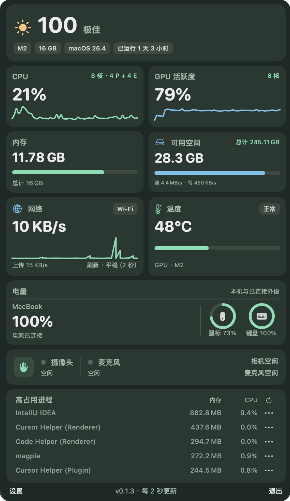
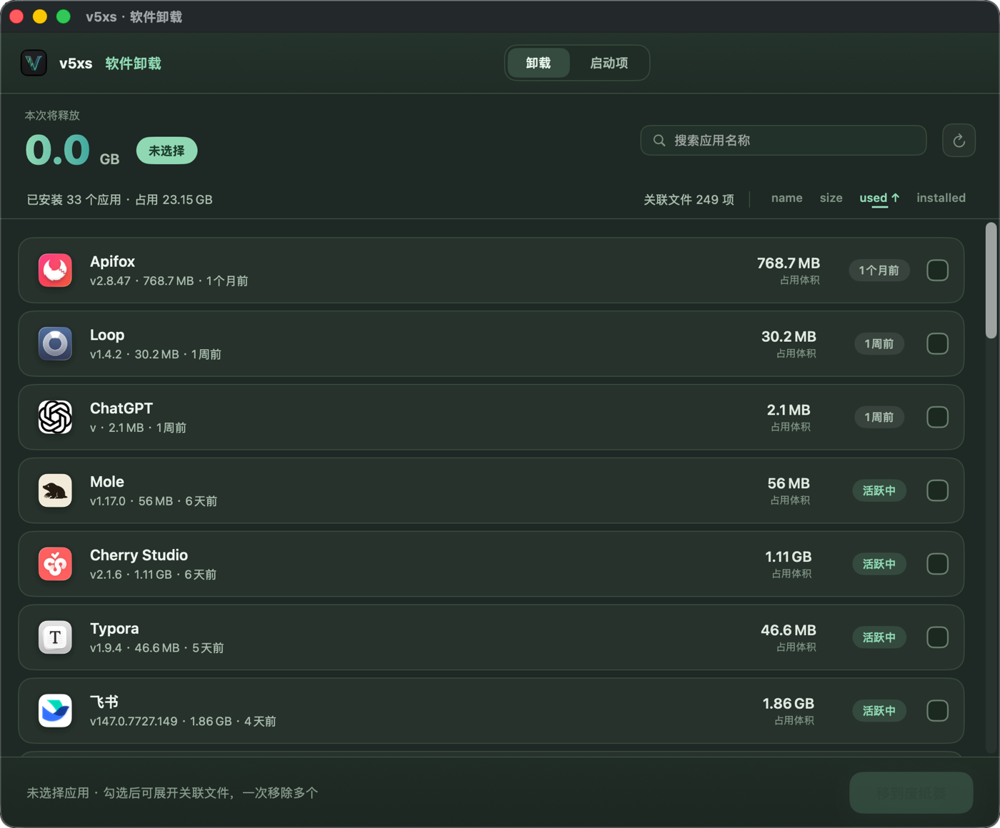
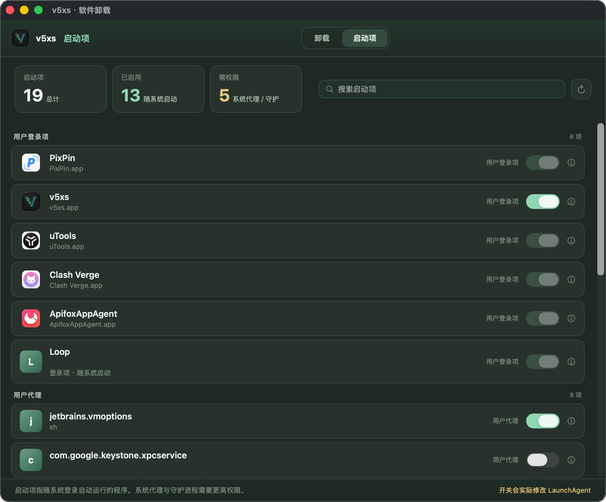

Know what your Mac
is working on.
CPU and GPU activity, memory, disk, network and temperature each have a place in one panel. Graphs show how things change, not just where they stand.
v5xs for macOS
A little animal in your menu bar runs to your system's rhythm.
Know what's happening, without breaking your flow.

MORE THAN A NUMBER
It stays quietly in your menu bar. Open it when you want a closer look.
CPU and GPU activity, memory, disk, network and temperature each have a place in one panel. Graphs show how things change, not just where they stand.
Search, sort and select multiple apps. Review related files one by one before moving anything to the Trash.

Login items, LaunchAgents and LaunchDaemons are grouped by source. Find what you no longer need and change its state where permissions allow.

THOUGHTFUL DETAILS
The busier your CPU, the faster your animal runs. Choose from 14 characters, or pause the animation whenever you like.
See your Mac's battery alongside connected Bluetooth mice and keyboards, all in the same panel.
Switch between Simplified Chinese, Traditional Chinese and English instantly. Set the monitoring refresh rate to suit your needs.
Sort by memory or CPU to find the busiest processes. You'll be asked to confirm before ending one.
Check only, or download automatically. Packages are verified before installation, and you choose whether the app restarts on its own.
GET TO KNOW YOUR MAC
Download the DMG, drag v5xs into Applications, and start from the menu bar.
Download on GitHubFAQ
Installation, compatibility and permissions.
v5xs supports macOS 14 and later. Apple Silicon and Intel builds are available; pick the DMG for your Mac on the GitHub Releases page.
The current build uses an ad-hoc signature. If Gatekeeper shows a warning on first install, allow v5xs under System Settings → Privacy & Security.
That's up to you. Automatic checking, downloading and restart-to-install each have their own switch. With automatic restart off, click “Update and Restart” when the update is ready.
Temperature readings have been verified on Mac14,2. On other models, unavailable readings are shown as such; the other monitoring features continue to work.